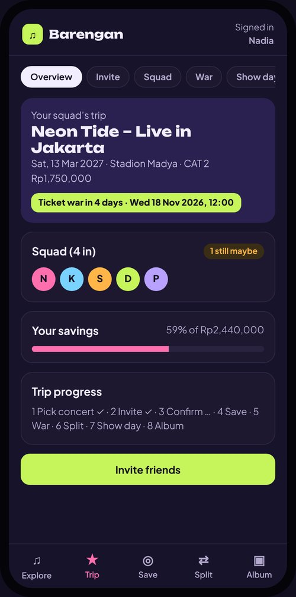

Product case study · Jenna Gozali
Barengan
A planner for friends going to concerts together, from ticket war to the encore.
My roleSolo: product, business analysis, UX and prototype
ContextFinal project, Business Analyst & Product Strategy Bootcamp, dibimbing.id
TimelineNovember 2026 · Checkpoint 1
ToolsGoogle Sheets, slides, HTML/JS prototype, AI tools for drafting and building

